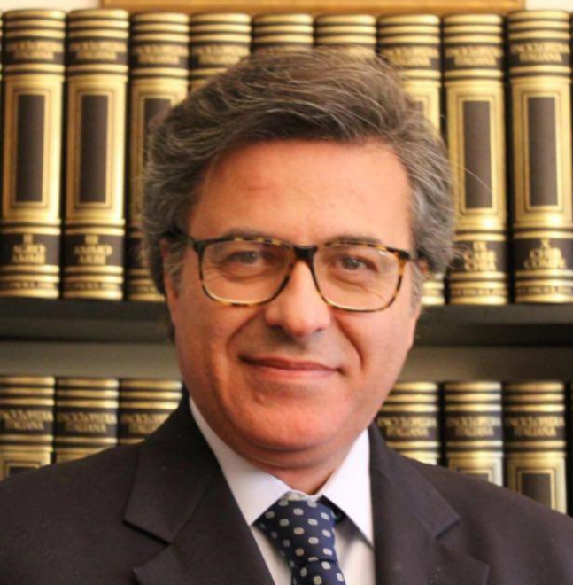

Biography
Professor Giovanni Ambrosino is an internationally recognised leader in hepatobiliary and pancreatic surgery, liver transplantation and bio‑artificial organ research. Across a 35‑year career he has performed more than 8 000 major procedures, directed two transplant centres and mentored hundreds of surgical trainees worldwide.
Current Objective
Prof. Ambrosino now seeks an academic or administrative leadership role where he can expand cutting‑edge clinical programmes and shape the next generation of transplant surgeons.
Education & Training
- M.D., University of Padua — Medicine & Surgery (1984)
- Post‑graduate Diploma, Emergency & General Surgery — University of Padua, 70/70 honours (1989)
- Post‑graduate Diploma, Microsurgery & Experimental Surgery — University of Milan, 70/70 honours (1992)
- Diploma, Interventional Angiology — University of Padua, grade “Excellent” (1992)
- Clinical & Research Fellowship, Thomas Starzl Transplantation Institute — UPMC Pittsburgh (1985‑1987)
Academic & Hospital Appointments
- Chair, General & HPB Surgery — San Bortolo Hospital, Vicenza (2000‑2016)
- Professor of Surgery — University of Padua (2005‑2020)
- Director, Liver Transplant Programme — University of Padua (2008‑2020)
- Visiting Professor — Harvard Medical School, Stanford, Cedars‑Sinai, Mayo Clinic, MGH
Editorial & Society Roles
- Associate Editor, HPB Surgery
- Peer‑reviewer for Annals of Surgery, Transplantation & Journal of Hepatology
- Founding Member, European Society for Organ Transplantation (ESOT)
Key Patents & Innovations
- ALEX™ Bio‑artificial Liver (PCT US97/22727) — Autologous matrix bioreactor.
- First hepatocyte & gene transplant curing Crigler–Najjar II (2001).
- First robotic stereotactic radiosurgery for inoperable liver tumours (2004).
Certifications & Licensure
- Italian Board of Surgery (License #36365)
- US ECFMG Certification (1990)
- EB‑1 Green Card for Extraordinary Ability (2021)